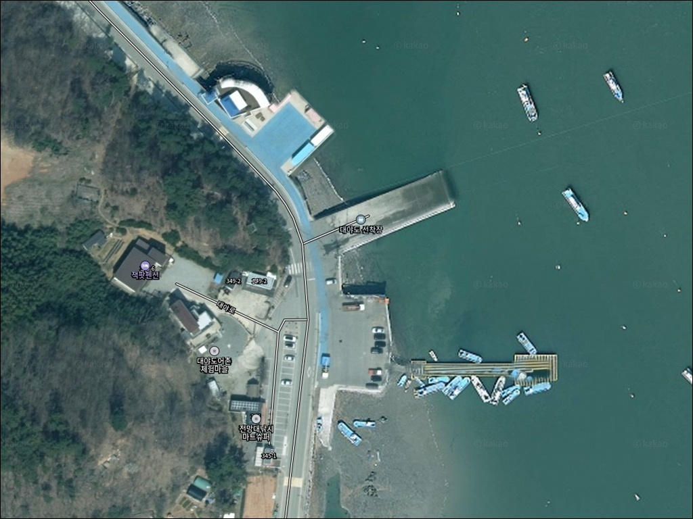
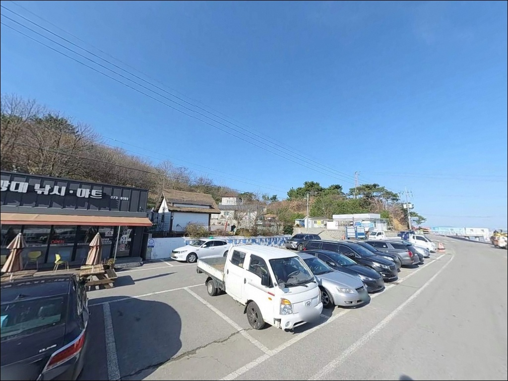
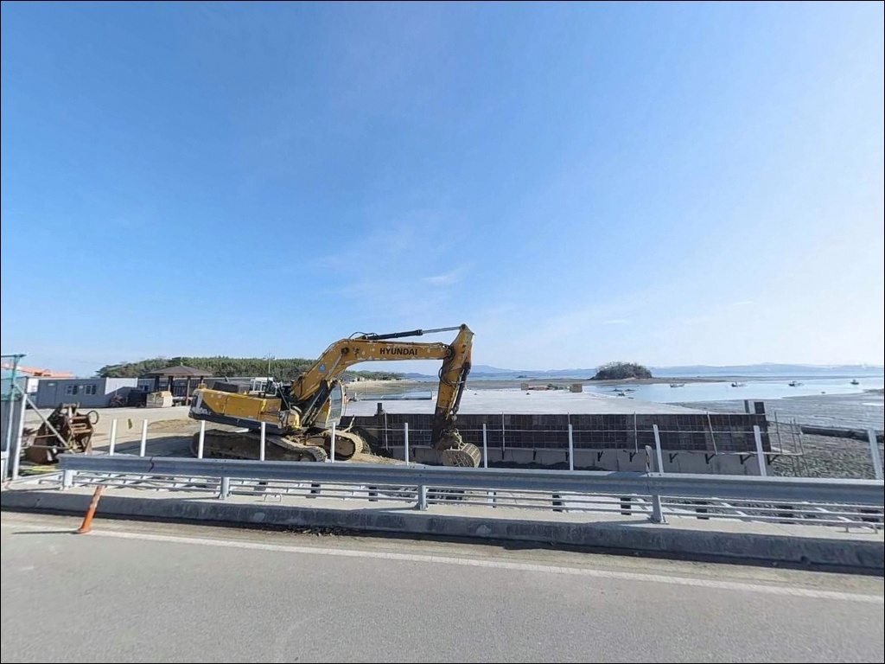
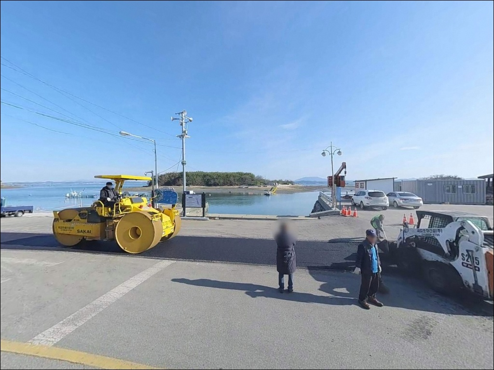
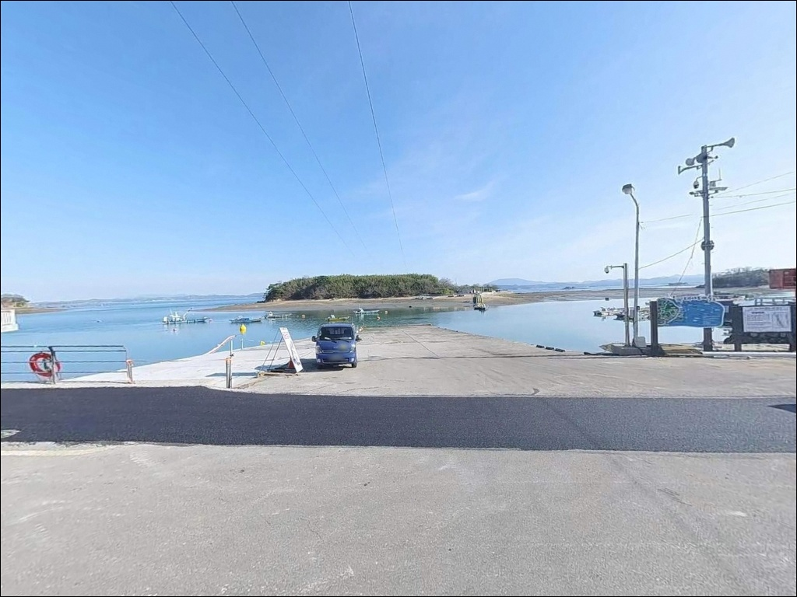
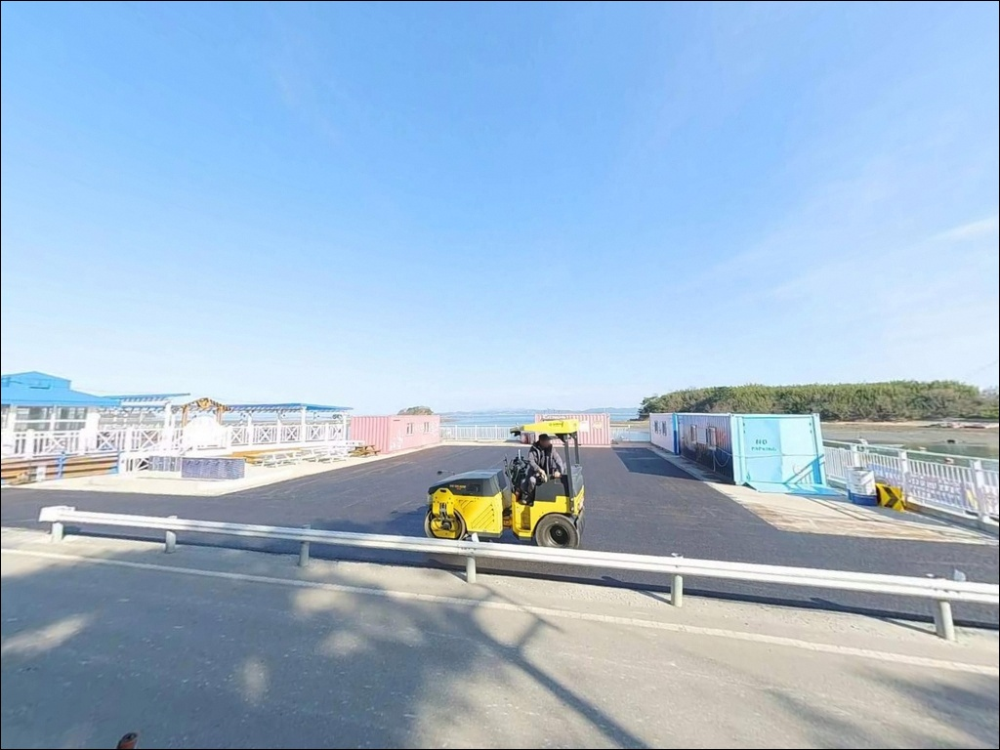
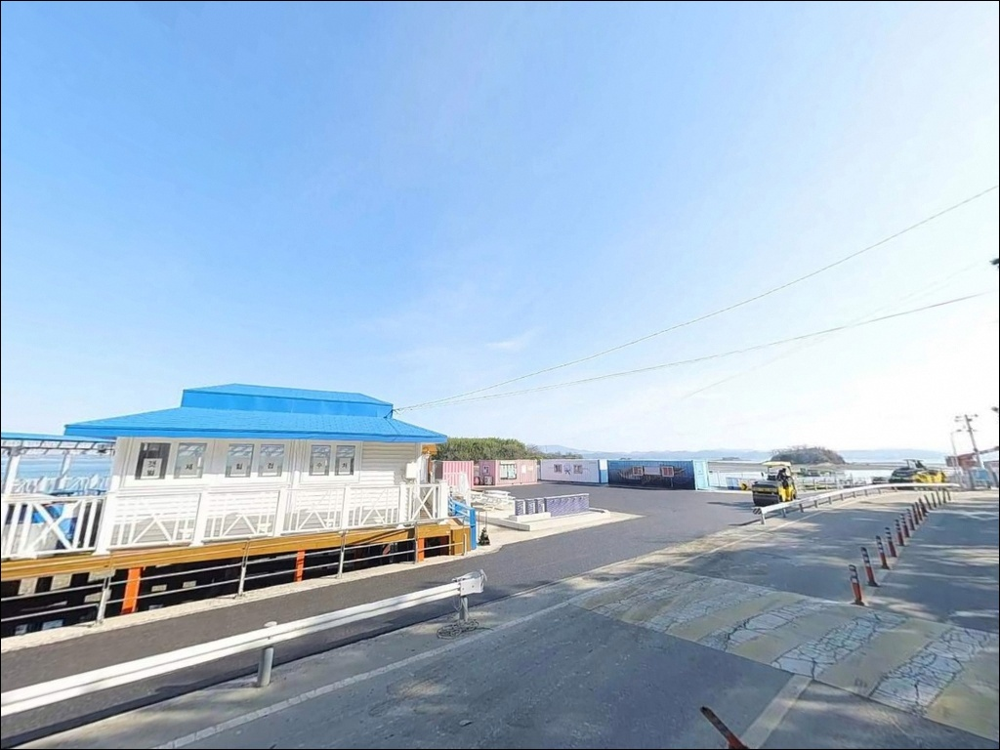
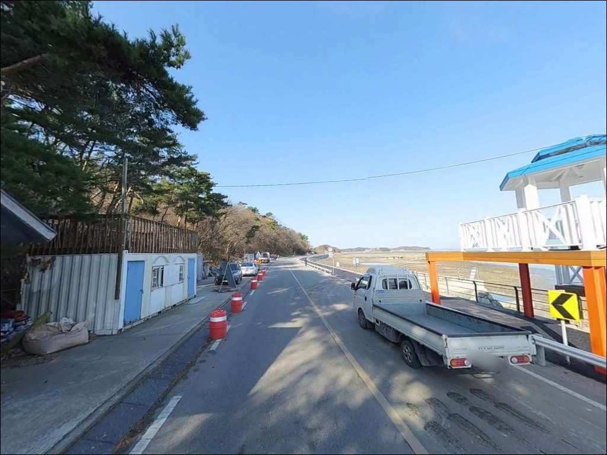
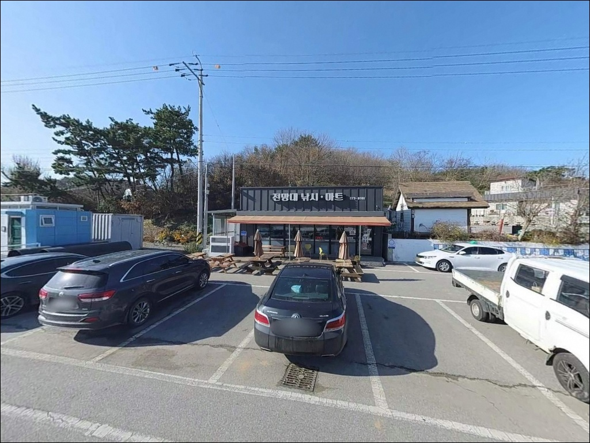

대야도 선착장, 안면도 충남 태안군 안면도 감성 차박, 낚시 포인트


포인트 안내
서해 내만형 선착장에서 가장 많이 틀리는 판단은
물때를 무시하고 수심을 기대하는 것입니다.
대야도 선착장은 서해 조석 간만 차가 큰 지형으로,
간조 시 선착장 주변 수심이 크게 낮아져
일부 구간은 낚시 자리 자체가 사라지는 편입니다.
이 글은 대야도 선착장의 진입 여건, 차박 환경,
낚시 스타일별 적합 조건을 중심으로 정리합니다.
조황 단정이나 특정 어종 보장은
이 글의 범위에 포함되지 않습니다.
대야도 선착장
충남 태안군 안면읍 중장리 1440-4
안면도 남부 천수만 방향에 자리한 이곳은
2004년 어촌정주어항으로 지정된 공식 항구입니다.
선착장 옆에는 어촌체험마을이 함께 운영되고 있어
낚시 외에도 선상 체험 출조가 가능한 구조입니다.
선착장 남측 갯바위와 선착장 끝단이
주요 낚시 거점 역할을 하는 복합형 포인트입니다.

1. 진입 동선과 포인트 접근성
안면대로에서 대야로로 분기하는 경로를 통해
선착장까지 접근하는 구조입니다.
이 경로는 포장도로로 이어지며
비포장 구간은 거의 없는 편입니다.
다만 마을 진입로 구간은 폭이 좁아질 가능성이 있어
주말이나 성수기에는 교행 상황을 미리 염두에 두는 편이 좋습니다.
관광 안내 자료 기준으로 대야도 선착장에는
공영주차장이 조성되어 있으며,
선착장 옆 체험안내센터 인근 공간도
방문객 주차용으로 활용되는 것으로 소개됩니다.
선착장 접안 구역과 선박 이동 동선을
차량으로 막지 않는 자리 선택이 기본입니다.
선착장 끝부분은 회차 공간이 넉넉하지 않을 수 있습니다.
대형 차량이라면 진입 전 위성지도로 회차 여건을
미리 파악해두는 것이 안전하며,
후진 진출이 어려운 차량은
갓길 여건도 함께 살펴야 합니다.

2. 차박 환경과 야간 체류 여건
대야도 선착장은 어촌체험마을과 민박·펜션이
함께 자리하는 구역이라,
완전히 외딴 포인트라기보다는
생활 어항 분위기에 가까운 환경입니다.
야간에는 차량 통행이 크게 많지 않지만
체험객·낚시 방문객이 드나드는 곳이라
완전한 정적을 기대하기는 어려울 수 있습니다.
외해 직접 노출이 아닌 내만 구조라
강풍·파도보다는 바람 방향이 주요 변수입니다.
서해 안면도 특성상 북서계절풍이 강한 시기에는
체감 온도가 낮아지는 편이라,
가을·겨울 차박 시 방한 준비는 꼼꼼히 챙기는 것이 좋습니다.
대야도 서쪽 일대는 태안해안국립공원 구역과
경계가 인접한 곳이 있습니다.
선착장이 위치한 천수만 방향 구역의
정확한 공원 포함 여부는 단정하기 어려우므로,
야영·취사 허용 여부는 출발 전 현장 안내판이나
관할 기관을 통해 확인하는 것이 먼저입니다.


3. 주변 편의시설 및 인프라 현황
대야도 선착장 바로 옆에는
어촌체험마을 체험안내센터가 운영되고 있습니다.
선상낚시·갯벌 체험·독살 체험 등의
프로그램을 운영하는 곳으로,
낚시 여건이 여의치 않을 때
선상 체험 출조로 전환하는 플랜B로도
활용해 볼 수 있습니다.
반경 3km 이내 편의점·마트·주유소의
확정된 위치 정보는 이 글에서 특정하기 어렵습니다.
방문 전 네이버 지도에서 "중장리 편의점" 또는
"안면읍 편의점"으로 직접 확인하는 것이 현실적이며,
식수·얼음·낚시 소품은 출발 전에 갖추고
이동하는 편이 안전합니다.
반경 10km 이내로는 안면도 내 다수의
방파제와 어항 포인트가 분포합니다.
구매항(약 5.1km)에는 좌대 낚시 시설이
공식 운영 중이라 당일 대체 출조지로
활용성이 높습니다.

4. 서해 물때를 먼저 잡아야 하는 이유
대야도 선착장 방문 전에 가장 먼저 확인할 것은
물때입니다.
바다타임에서 대야도항(대아도항 등재) 기준
물때를 확인하고,
간조 타이밍과 만조 타이밍을 기준으로
입장 시각을 조율하는 것이 이 포인트의 기본입니다.
서해 내만 지형 특성상 간조 시
수심이 크게 낮아지는 구간이 생겨
낚시 가능 구역이 줄어들 수 있습니다.
만조 전후 또는 조금 시기를 기준으로
입장 타이밍을 잡는 편이
낚시 여건을 충분히 활용하는 방식입니다.
야간 갯바위·선착장 끝단 진입 시에는
미끄러운 이끼 구간과 조명 부족에 주의가 필요합니다.
헤드랜턴과 구명조끼는 반드시 챙기고,
출조 당일 아침 기상 예보를 다시 한번 확인하는 것이
기본 준비입니다.
어촌체험마을이 인접한 공간이므로
야간 소음과 쓰레기 매너도 평소보다
신경 써야 합니다.

5. 지형 기반 낚시 여건 분석
대야도 선착장은 서쪽으로 길게 뻗은
선착장 구조입니다.
내항은 비교적 잔잔하고
외항 쪽은 조류 소통이 있는 편으로,
선착장 끝단은 조류가 살아나는 구간으로 추정됩니다.
남측에는 갯바위 지형이 이어지는 구간이 있어
선착장 생활 낚시와 갯바위 루어를
병행할 수 있는 구조입니다.
서해안 특성상 간조 시 일부 구간에서
뻘 저질이 드러날 가능성이 있습니다.
선착장 외측 또는 끝단 방향으로
채비를 멀리 보내는 방식이
수심 확보에 유리한 편입니다.
암반 저질이 혼재하는 갯바위 구간은
밑걸림이 생기는 자리도 있어
여분 채비를 충분히 준비하는 것이 좋습니다.
에깅이란 쭈꾸미·갑오징어를 대상으로
에기(인조 미끼)를 사용하는 루어낚시 방식입니다.
대야도 선착장과 인근 갯바위 구간은
가을철 에깅 출조지로 소개되는 사례가 있으며,
특히 선착장 끝단 방향은
조류 흐름이 형성되는 구간으로 추정됩니다.
대야도 선착장은 강한 포인트라기보다
복수 방식을 동시에 운용할 수 있는
생활 낚시형 구조입니다.
가기 전에 최신 조황은 꼭 검색해 보시기 바랍니다.


6. 포인트에 어울리는 낚시 스타일
에깅(쭈꾸미·갑오징어) 시즌에
이 포인트가 가장 활발해지는 편입니다.
선착장 끝단과 외측 방향은 조류 흐름이
살아나는 구간으로,
에기를 멀리 캐스팅한 뒤 천천히 끌어오는 방식이
기본 공략입니다.
가을 이른 시기는 쭈꾸미,
이후 갑오징어 시즌으로 이어지는 패턴을
기대해 볼 수 있는 지형입니다.
원투낚시란 봉돌을 달아 먼 거리까지 채비를
캐스팅한 뒤 바닥층 어종을 노리는 낚시 방식입니다.
선착장 끝단에서 외측 방향으로 채비를 멀리 보내
바닥층을 탐색하는 방식이 이 포인트 구조와 잘 맞습니다.
간조보다는 만조 전후 타이밍에 수심이 확보되어
유리한 편입니다.
남측 갯바위 구간은 우럭·노래미를 노리는
루어 공략에 어울리는 지형입니다.
소형 지그헤드에 웜 채비를 달아
갯바위 경계선과 암초 주변을 탐색하는 방식이
이 구간의 기본 공략 패턴입니다.
야간에는 선착장 주변 조명 아래
소형 루어로 가볍게 탐색하는 방식도
시도해 볼 수 있습니다.
찌낚시는 내항의 잔잔한 수면 조건을 활용하는 방식입니다.
서해 내만 특성상 간조 시 수심이 낮아지는 점을 감안하여
만조 전후 타이밍에 집중하는 편이 효율적입니다.

7. 대안 포인트와 플랜 B 동선
대야도 선착장 조황이 여의치 않거나
포인트가 혼잡할 경우,
같은 안면읍 생활권에서 접근 가능한
장고도 방파제(약 3.5km)가 첫 번째 대안입니다.
방파제 구조로 수심 확보 가능성이 있어
대야도보다 강한 포인트 성격을 기대할 수 있는 편입니다.
구매항(약 5.1km)은 선착장·갯바위·좌대 낚시까지
선택지가 넓어 당일 이동 대안으로 활용성이 높습니다.
좌대 낚시 시설이 공식 운영 중이라
조황이 부진한 날에는
좌대 전환 플랜B로도 쓸 수 있는 포인트입니다.
안면도 최남단의 영목항(약 7.4km)은
규모가 큰 어항으로 낚시 인프라가
상대적으로 잘 갖춰진 곳으로 알려져 있습니다.
대야도 출조를 마치고
당일 탐방 동선으로 묶어볼 수 있는 포인트입니다.

물때 계산이 먼저 서야
대야도 선착장이 제대로 보입니다
에깅, 원투낚시, 루어를 복수로 운용하는 낚시인이라면
대야도 선착장의 선착장·갯바위 혼합 구조는
잘 맞는 지형입니다.
강한 포인트라기보다 편하게 즐기는 생활 낚시형에
가까운 편이지만,
가을 에깅 시즌에는 충분히 집중해 볼 만한
조건이 갖춰지는 곳입니다.
다만 간만 차가 큰 서해 내만 특성을 무시하고
간조 타이밍에 입장하면
낚시 가능한 수심 구간이 사라지는 상황을
맞닥뜨릴 수 있습니다.
물때 확인, 진입로 사전 파악, 차박 위치 선정,
이 세 가지를 갖추고 간다면
어촌 분위기 속에서 낚시와 차박을 함께 즐기기
좋은 출조가 됩니다.
완전 자급 체제로 준비하고 나선
조용한 서해 어항 차박이라면,
물때를 맞춘 낚시와 밤 한 번 그곳에서 보내는 경험이
기대 이상으로 기억에 남는 편입니다.